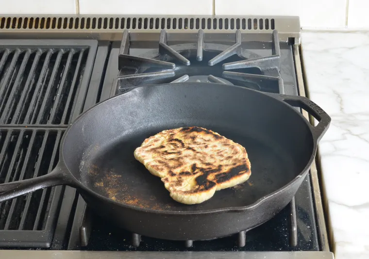

Naan is a soft and pillowy Indian-style flatbread traditionally made in a tandoor, or cylindrical clay oven. It’s made from a yeast dough enriched with yogurt and olive oil and delicately flavored with anise seeds. After rising, the dough is rolled out and slapped against the walls of the tandoor, where it adheres and bakes quickly over a burning fire. While the bread is still warm, it is brushed with melted butter. In this recipe, I replicate the high heat and charred flavor of a clay oven by using a very hot cast iron skillet or nonstick pan. Homemade naan is quick to make, save for the rising time, and so much more delicious than store-bought. Pair it with tandoori chicken, butter chicken, or smoky chickpea, lentil, and vegetable soup.
In a large bowl, whisk together the flour, sugar, yeast, salt and anise seeds (if using). Set aside
In a medium bowl, whisk together, the yogurt, olive oil, and ¾ cup warm water (about 100°F). Add the yogurt mixture to the dry ingredients and mix with a fork. When the dough is about to come together, dust your hands with flour and knead gently into a soft, slightly sticky dough (sprinkle more flour, little by little, if the dough is too wet to work with). As soon as it comes together, stop kneading.
Lightly oil or spray a clean bowl with nonstick cooking spray (the bowl should be large enough to allow the dough to double in size). Transfer the dough to the prepared bowl and cover with plastic wrap or a damp kitchen towel. Let sit in a warm place for 1 to 1½ hours, or until about doubled in size (hint: the warmer the spot, the faster the dough will rise).
Fill a small bowl with about ½ cup flour. Dust a work surface with some of the flour and dump the dough on top. Sprinkle some of the flour on top of the dough and on your hands. Shape the dough into a long rectangle and cut into 6 equal portions, dusting with more flour as necessary so the dough doesn't stick. Roll each portion of dough in the bowl of flour to keep them from sticking.
Warm a large cast iron or heavy nonstick pan over medium-high heat until very hot. Using a rolling pin, roll one of the dough balls into an oval shape about ⅛-inch thick (it should be about 9 x 4 inches). Pick up the dough and flip-flop it back and forth between your hands to release any excess flour; then gently lay the dough in the dry skillet and cook until the top is bursting with air bubbles and the bottom is golden and blackened in spots, a few minutes. Flip the naan and cook about 1-2 minutes more until the the bottom is lightly browned and blistered in spots. Remove the naan from the skillet and brush with melted butter. Place the naan in a tea towel-lined dish to keep warm. Repeat with the remaining naans, adjusting the heat lower if necessary as you go (I usually find it necessary to lower the heat to medium after the first naan). Sprinkle with parsley, if using, and serve warm.
To keep the cooked naan warm, place them in a 200°F oven. Store leftovers in a Ziplock bag and reheat in a 350°F oven wrapped in foil.